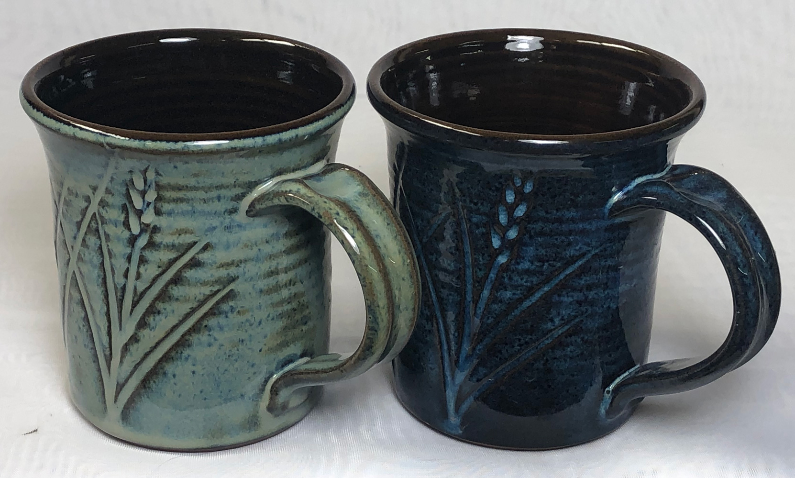
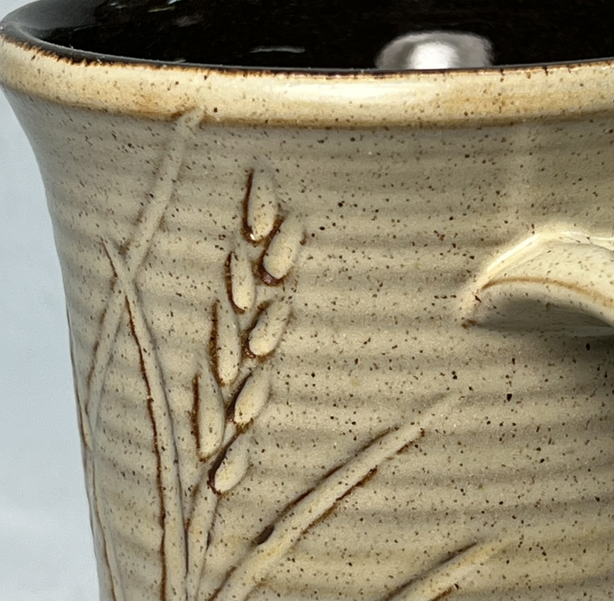
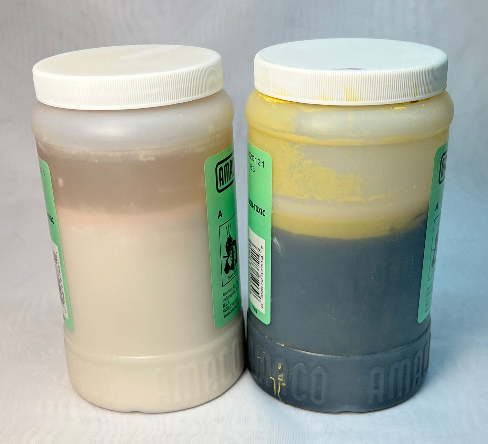
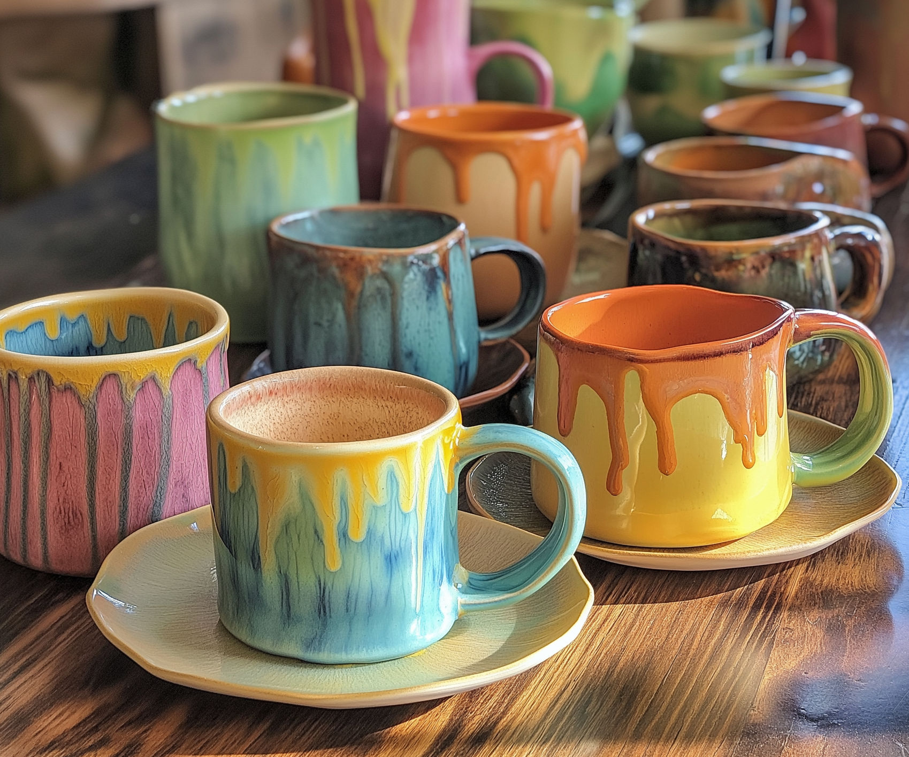

Commercial hobby brushing glazes
These are an incredible benefit to pottery beginners and pure hobbyists. But they can also be an obstacle to progress and affordability as your skills improve.
Key phrases linking here: commercial glazes, commercial glaze, goopy glaze - Learn more
Details
This page discusses commercial glazes made for hobby potters. The following is a description of their utility and value as might be seen from the view of a potter or instructor used to making his/her own glazes but increasingly employing commercial products where they seem advantageous.
Commercial brushing glazes have their place, making it possible for many more people to enjoy ceramics (e.g. those having limited space or working in a community studio, hobbyists, entry-level people). For example, rank beginners can be sent home with bisque ware and some jars of glaze and they have everything needed to decorate pieces (degree of success of course, assumes reading the labels and scanning the QRCodes on the jars). Using these paint-on products protects them against common mistakes made by new potters (e.g. getting the glaze on too thick, flaking off on drying, issues with layering). The eye candy on glaze vendor websites and supply store shelves is also a powerful motivation to continue in ceramics. New products are always coming as vendors compete with each other. Somehow their products seem magic, like it would be impossible to mix these ourselves. This low bar of entry for learning glazing can see newbies having only weeks of experience in ceramics, for good or for bad, selling their works at craft sales and markets.
Unfortunately, commercial glaze products are very expensive, when presented as the only practical approach for budding potters the entry bar becomes high enough to entrench an approach that is financially unsustainable for many. Or that demands charging very high prices for the ware. Ongoing expense usually does not scale, thereby stunting growth toward production and self-sustainability. It is common for people to not even realize there are faster cheaper ways. The disconnection many have with the materials is well illustrated when hobbyists ask for more of the “paint” from their supplier. And their dependence is really tested when suppliers discontinue products they rely on. Consider also the labour - a 500ml jar is likely 15 minutes of painting time (plus drying between coats). And the results in the flashy pictures online frequently don’t match what happens - so time, expense and testing are still needed to find the right product or blend to get the desired appearance. Even then, it might craze on your clay - so it is back to the drawing board. In the view of the more craft-oriented, we can forget to just marvel that the whole process actually works.
Hobby glaze manufacturers have a daunting task. Pretty well all glazes fire differently depending on the type of body they are on, the application thickness, the firing schedule. Further, users expect that no matter what color or how bright it is the product is food safe. They expect to layer and mix anything and no interactions will occur that cause leaching. They want to be able to put on many layers and not have it run or peel off. Manufacturers face increasing variations in material supplies and skyrocketing prices. And the ethics of using blood minerals. And they must combat the growth of microbials - a complicated issue. Another tricky task is to make their products fit (without crazing or shivering) on all the clay bodies people use (of course, that is impossible - no glaze manufacturer recommends crazing on functional ware but they are powerless to stop it because they don't make the clay bodies their products need to fit). One big advantage they have over people who mix their own is the availability of specialized frits (e.g. those supplying ZnO, SrO, Li2O, BaO), they can buy these in the minimum pallet or batch quantities whereas an individual user could never afford this, and thus cannot make the special effect glazes that depend on these).
As noted, the colorful jars and fancy docs suggest glaze companies have special knowledge of glaze making. That is true but it is not exclusive knowledge. Their technicians may do hundreds of firings in developing just one special effect. But they also often just start from well-known recipes that potters have used for generations, tuning them for optimal performance. They are hard workers who keep good notes. And, they are practical - for example, they can add stains and opacifiers to a clear transparent glaze to produce a line of 50 colors. Or add stains to an underglaze base. Good news: At a minimum, you can do the latter three. If you know a little about glaze chemistry, you can also glean clues about the recipes of glaze manufacturers. Many sell the materials they use to make the glazes and the specialized frits in their catalog give clues to their formulations. Many also sell the metallic glitter and speckle granules. And their descriptions and labelling give more clues. As noted, a simple google search on the glaze type or name will find many starter recipes. Of course, these should be rationalized against common-sense recipe limits.
Safety/Toxicity: Hobby brushing glazes are seen as outside the realm of the production of tableware or functional ware, thus not subject to the same regulations. Manufacturers affix labels claiming products are food-safe and lead-free. Even reactive saturation metallics are labelled this way. Manufacturers targetting hobbyists can claim adherence to ASTM D-4236. It is a standard for art materials packaged in sizes intended for individual users. It thus refers to hazards to which the potter is exposed in applying the glaze to the ware (long term in small hobby quantities). It does not address leaching hazards the ware presents to users of the pottery. It states that "it is the responsibility of the user ... to establish appropriate safety, health, and environmental practices".
Editorial: Tiny and expensive bottles of glaze take up most of the shelf space in ceramic supplier showrooms these days. Even though sales staff tell customers they have all the powders and recipes for DIY mixing, they look in amazement as most choose the expensive ones. Veteran DIY potters are starting to feel like relics. At Digitalfire, we pride ourselves in providing the resources to help people learn why and how to make their own glazes, engobes and underglazes (and even clay bodies). Yet when saying the above we often get pushback on social media, even threats to be removed. Material and process safety are things that cannot be ignored. Given the increasing emphasis on health and safety, going forward it is only wise that we should embrace better understanding. Consider this post I just saw: "Recently in the Latin American world of pottery, a very popular page posted about how the craftsmanship is being vandalized under the dynamics of today's social media-oriented culture. Nowadays, whoever has money can open a ceramic studio even if only having taken a couple of classes."
Related Information
Michael Cardew might be turning over in his grave!

This picture has its own page with more detail, click here to see it.
This post got a lot of negative reaction on social media. To be clear, I work both sides of the fence, making my living on selling prepared glazes and clay bodies but I get my satisfaction being closer to the materials and processes. That is what enables me to give customer support. I am not an artist, ceramic art is outside the scope of this page. For part of my life in the craft of pottery I am also guilty of what I lament below. In all my years dealing with customer traffic at our store I have never once had a customer that was offended by seeing new clay and glaze recipes we are discovering in the studio and lab, that are better and cheaper than prepared ones. But online some are somehow offended by what follows. 80 manufacturers are selling convenience and encouraging disconnection - although I work for one of them I am a voice of caution about this.
This book was once a “Bible” of hobby and professional potters. They were independent and resourceful. They made their own clays and glazes, knew the materials, built their own kilns. Now we scan social media sites for ideas on layering expensive prepared goopy brushing glazes and hope they melt together into something presentable. Many have even forgotten how to wedge clay properly. We describe processes using mystical art language and exchange likes and poor advice on social media. Those who still know how to retotal a recipe and venture into mixing their own often end up in the online trafficking of an endless parade of recipes that don’t work. Now we even outsource design to AI. Even Nigeria, the very country about whom Cardew wrote, has lost its pottery tradition.
I never appreciated the book back there. Even though he came to visit us in 1973. I have always just taken whatever clay I needed out of our warehouse, but now that I very often make my own clay it really resonates. I got this copy on eBay, I value it as an inspiration to be more closely connected with the planet and the minerals it gifts us (of course I would not do everything as he does). He was no dinosaur, he understood and taught glaze chemistry and material mineralogy, his work was the basis for many prepared glazes we buy today. "Progress" is defined by some as convenience products that make modern ceramics easy. But I believe that, for many, progress is arming yourself with a little more understanding - it enables making better quality ware, in less time, for less expense and time than with prepared products.
Commercial glazes may or may not work on your clay body

This picture has its own page with more detail, click here to see it.
Left two: Plainsman M390 stoneware. Lower right: M370 porcelain. The bottom two samples are a popular cone 6 ultra clear commercial bottled glaze. On the porcelain, it is crazing. On the red clay it is saturating with micro-bubbles and going totally cloudy, with so many ripples in the surface the texture has become satin. Whose fault is this? No ones. This glaze is simply not compatible with these two bodies. The one on the upper left has almost no bubbles and no crazing. It is the GA6-B recipe. It is well-documented and easy to adjust.
Commercial glazes on decorative surfaces
Your own on food surfaces

This picture has its own page with more detail, click here to see it.
These cone 6 porcelain mugs are hybrid. Three coats of a commercial glaze painted on the outside (Amaco PC-30) and my own liner glaze, G2926B, poured in and out on the inside. When commercial glazes (made by one company) fit a stoneware or porcelain (made by another company) it is by accident, neither company designed for the other! For inside food surfaces make or mix a liner glaze already proven to fit your clay body, one that sanity-checks well (as a dipping glaze or a brushing glaze). In your own recipes you can use quality materials that you know deliver no toxic compounds to the glass and that are proportioned to deliver a balanced chemistry. Read and watch our liner glazing step-by-step and liner glazing video for details on how to make glazes meet at the rim like this.
Specific gravities on three commercial glazes might surprise you

This picture has its own page with more detail, click here to see it.
The freshly opened transparent low-fire glaze on the left has a specific gravity of only 1.34 (a high water content compared to dipping glazes). Yet it is viscous and holds in place because they add a lot of gum. It needs three coats to go on thick enough and requires quite a bit of time to dry each one. Highly fritted transparent glazes need to be applied thin enough to be clear, thick enough to be glassy smooth but not too thick (to avoid clouding). Amaco likely targets the low specific gravity to enable good control of thickness. The center Potter's Choice glaze, is 1.52. And thus goes on nice and thick with each coat. That glaze likely contains lots of clay so little or no gelling agent (e.g. Veegum) is needed. The Celadon glaze on the right is in between, 1.46. Glaze manufacturers can produce at a broad range of specific gravities, they adapt the percentage of gum (e.g. Veegum and CMC gum) to impart the needed rheology and brushing characteristics.
Commercial supposedly safe glazes leaching. A liner glaze is needed.

This picture has its own page with more detail, click here to see it.
Three cone 6 commercial bottled glazes have been layered. The mug was filled with lemon juice overnight. The white areas indicate leaching has occurred! Why? Glazes need high melt fluidity to produce reactive surfaces like this. While such normally tend to leach metals, supposedly the manufacturers were able to tune the chemistry enough to pass tests. But the overlaps interact, like drug interactions they are new chemistries. Cobalt is clearly leaching. What else? We do not know, these recipes are secret. It is better to make your own transparent or white liner glaze (either as a dipping glaze or brushing glaze). Better to know the recipe to have assurance of adherence to basic recipe limits.
Are commercial glazes really guaranteed food safe? When manufacturers claim adherence to standards like ASTM D-4236 what are they saying? The small amounts of liquid glazes are safe for the artist to brush on. They are not making claims about leaching on finish ware.
The glaze cost on this mug is three times the cost of the clay!

This picture has its own page with more detail, click here to see it.
This jar of glaze will do seven of these mugs! Four coats are required because it is watery. What about the time? To glaze a thin-walled piece like this could take an entire morning of applying coats and waiting for them to dry. There are two obvious choices for a more economical and faster method: Make your own high SG brushing glaze and do it in two coats, heating the piece to about 200F between each. Or heat the piece once to 250F and quickly immerse it in a dipping glaze and be done in 10 seconds! Our G3879 or G1916Q recipe families are a good starting point for both options. Another point about time cost: We can weigh out and mix a jar of brushing glaze of either in ten minutes. Or weigh out a whole pail of a dipping version in 15 minutes.
Low Temperature Heaven:
Commercial underglazes, make your own clear overglaze

This picture has its own page with more detail, click here to see it.
Decorate ware with the underglazes at the leather hard stage, dry and bisque fire it and then dip-glaze in a transparent that you make yourself (and thus control). These mugs are fired at cone 03. All have the same transparent glaze (G2931K), all were decorated with the same underglazes. Notice how bright the colors are compared to middle or high temperature. On the left is a porous talc/stoneware blend (Plainsman L212), rear is a fritted Zero3 stoneware and right is Zero3 fritted porcelain. When mixed properly you can dip ware in this glaze and it covers evenly, does not drip and dries enough to handle in seconds! Follow the Zero3 firing schedule and you will have ware of amazing quality.
The appearance of this commercial glaze varies with cooling rate

This picture has its own page with more detail, click here to see it.
This is Amaco PC-20 Rutile Blue. These mugs are the same clay, Plainsman M390. Both were brush-on glazed the same way. The one on the left was fired to cone 6 using the C6DHSC (drop-and-hold, slow-cool) schedule. The one on the right with the PLC6DS (drop-and-hold and free-fall) schedule. The label on the jar just says to fire to cone 6. But this is a rutile blue, and behaves like one. Since most people would fire fully loaded kilns slow cooling is a natural consequence of this and the color should be blue. That being said, variations in density of pack will still produce variations in the way this turns out. If you fire in a small kiln, the way we do, then it is necessary to program the cool cycle of the firing to be sure it does not drop too fast.
Brush-on commercial pottery glazes are perfect? Not quite!

This picture has its own page with more detail, click here to see it.
Brushing glazes are great sometimes. But they would be even greater if the recipe was available. Then it would be possible to make it if they decide to discontinue the product. Or if your retailer does not have it. Or to make a dipping glaze version for all the times when that is the better way to apply. The glaze manufacturer did not consider glaze fit with your clay body, if they work well together it is by accident. But if you have transparent and matte base recipes that that work on your clay body then adding stains, variegators and opacifiers is easy. And making a brushing glaze version of any of them. Don't have base recipes??? Let's get started developing them with an account at insight-live.com (and the know-how you will find there)!
These pieces reveal four benefits of making your own low fire glazes

This picture has its own page with more detail, click here to see it.
These were fired at cone 04. All three transparent glazes are on the same body (made from talc and ball clay). And fired at the same temperature - cone 04. Left to right: Amaco LG10, G3879C and Crysanthos SG213. We mix the middle one ourselves, from a recipe that employs a high percentage of Fusion Frit F-524. The first of four obvious benefits is evident: While frit F-524 is expensive, the glass it produces is more transparent and less iron-contaminated - so it transmits the whiter body color better. Second, the two commercial glazes are crazing. We fixed that using another expensive material, the super low expansion Ferro Frit 3249 (or its equivalent Fusion Frit F-69). Although containing significant MgO, that frit is an amazing melter even at this low temperature. Third, notice that the outer two mugs have micro-pinholes and surface defects that the middle one does not have. The reason for that is not obvious but it could be they have lower melt fluidity. The fourth benefit - the recipe can be adjusted to improve it. Yes, mixing your own glazes can really pay off in ware quality. At stoneware temperatures the opposite can also be achieved by mixing your own - creating glazes that use less expensive and more readily available materials.
A test kiln: Enabler to testing glazes
And to evolving your own glaze recipes

This picture has its own page with more detail, click here to see it.
The evolution of the quality and aesthetics of your work, and even your ability to cut costs, are stunted when you depend too much on others (e.g. for firing, for premixed glazes). This mug is a good example of tests I need to do. This is G3933, made by adding iron oxide, rutile and tin oxide to a 75:25 blend of our base matte and glossy glazes (G2926B and G2934).
-It is crawling at some of the sharp angles of the incised decoration, would a little CMC gum fix this?
-Would an 80:20 blend of the two glazes give a little more matteness?
-Our red-burning body gives better color at cone 5, would this glaze be richer and more matte on it in the C5DHSC slow cool schedule?
-I want to test increases in the rutile (for variegation), iron (for better color) and granular manganese (for more speckle).
-Would a Ravenscrag Slip base glaze be a better host for the rutile, iron and tin?
Having a small test kiln puts all of these changes on my radar. An account at insight-live.com to document everything well brings it all together.
How can underglaze and engobe colors be this bright?

This picture has its own page with more detail, click here to see it.
Top are V-326 and V-388 underglazes, painted on and bisque fired at cone 04. Although the layer is thin the coverage is very good and the brightness is stunning. How can these colors be so bright? Using very high, and expensive, percentages of stain. That explains why these commercial underglazes are double or triple the cost of a typical commercial glaze. The bottom mugs are clear-glazed and fired at cone 05, the one on the left with Amaco LG-10, The one on the right is Spectrum 700. The latter produces better results over the underglaze and is more transparent and less yellowish on the body.
Can you make bright-colored engobes and underglazes like this? Yes. Start with 50% stain and 50% stain medium (the percentage needed varies by color and type of stain).
Commercial glazes gone bad. Can they be used?

This picture has its own page with more detail, click here to see it.
On the left is an ultra-white, doubtless containing 20% zircon. It smells bad and has settled out, indicating that mocrobials have degraded the gelling agent. The one on the right is bright yellow, it would thus contain significant encapsulated stain. These stains have proven troublesome, they seem to spawn the growth of a different bacteria, it smells much worse. And the slurry has gone rotten, turning black. Companies add biocides during mixing and try to minimize the amount used (since they are based on chloroform). However, the many variables in materials and procedures will mean that some glazes can slip through the system and go bad even if unopened. And, users can introduce microbials during use. Of course, biocides have shelf lives, thus products employing them also do. Can these be used (if you can handle the smell): Yes, if they still paint well. Glazes are powdered rock in water, microbes cannot eat rock!
All of this being said, Amaco recommends the addition of a teaspoon of bleach to fix many cases of this, so try that first. Of course, if the gum has degraded it will have to be added (1% of dry weight in jar blender mixed).
Are drippy glazes what pottery has come to?

AI-generated using prompt for drippy and layer glazed pottery typically displayed on social.This picture has its own page with more detail, click here to see it.
There is an undeniable appeal to the bright colors of many commercial glazes. While nobody is recommending abandoning them and going all-in on DIY, there is an appeal to having more control. If you are a potter, hobbyist or small manufacturer, consider: Do we want customers eating and drinking from these kinds of glazes? This type of ware is often crazed (runny glazes do that, especially on bodies they were not designed to fit). These are also prime candidates for leaching the high percentages of the heavy metals they contain. All those drippy layers running and pooling on the insides can make pieces into glaze compression time bombs. For food surfaces, the glaze manufacturers want us using their recommended balanced, lightly colored products. Good news! These base recipes are also the easiest to make yourself. When did we get intimidated about mixing our own glazes anyway? No one has to go full mad scientist on DIY here. Research the common ingredients your supplier offers. Use recipes that pass a sanity test. Be a savvy consumer - these colored products are expensive and using them only on the outsides will cut your costs in half. Learn to add pigments to your base recipes and save even more. Then learn to make and use dipping glazes (not dripping glazes) and save time also.
Inbound Photo Links
Links
| URLs |
https://digitalfire.com/podcasts/storage/app/public/upload/podcast.mp3
Digitalfire Podcast Nov 2024: Commercial vs DIY glazes It is time to consider a hybrid approach to glazing. DIY glazes and dipping glazes where appropriate will save money, reduce the risk of leaching, match your clay body better. |
| Glossary |
Do-It-Yourself
In the past, all potters were do-it-yourselfers. Now DIY thinking is often being mocked. Has the pendulum swung so far the other way that we are learning helplessness and trading independence for convenience? |
 PayPal | No tracking, No ads, No paywall, No transient content! Just organized, concise information constantly updated and improved. Was this helpful? Consider supporting me. |
| By Tony Hansen Follow me on        |  |
Got a Question?
Buy me a coffee and we can talk 

https://digitalfire.com, All Rights Reserved
Privacy Policy